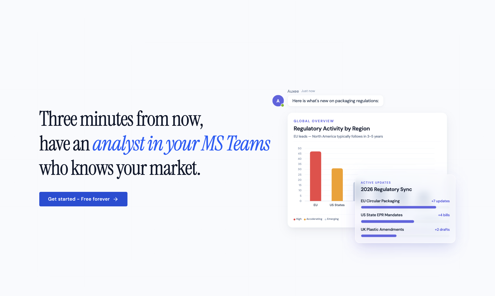
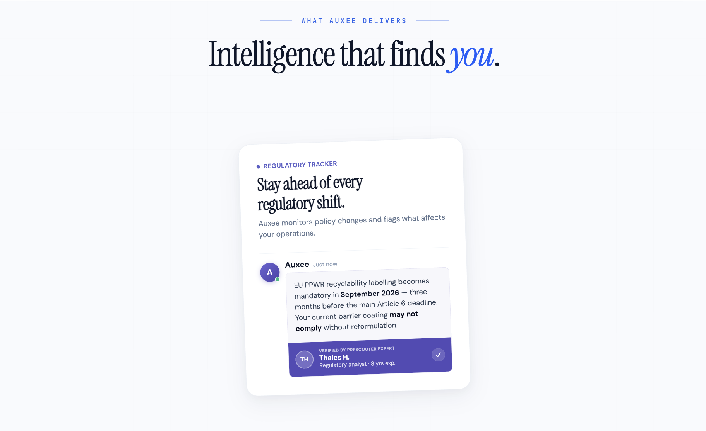
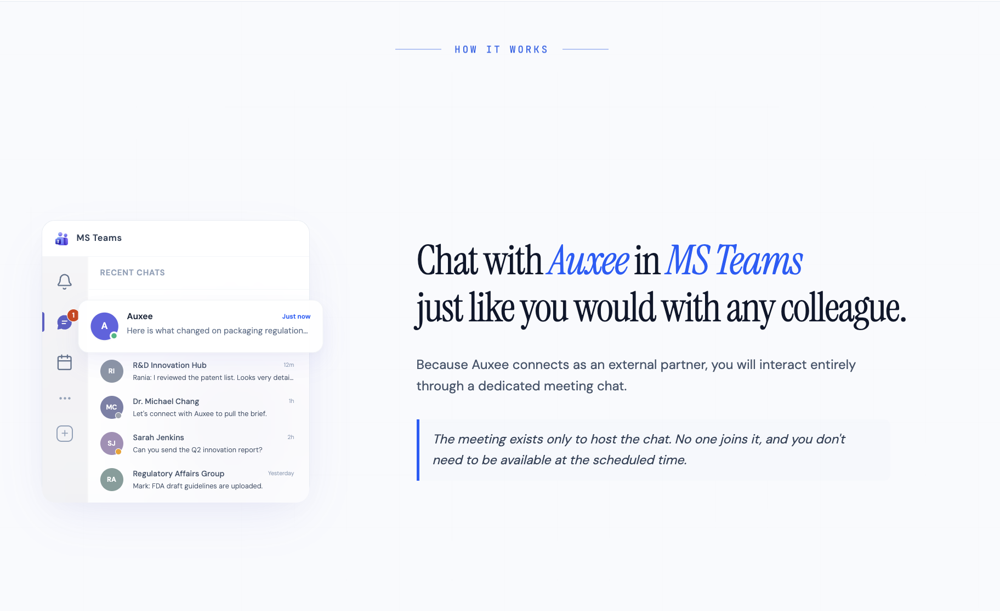
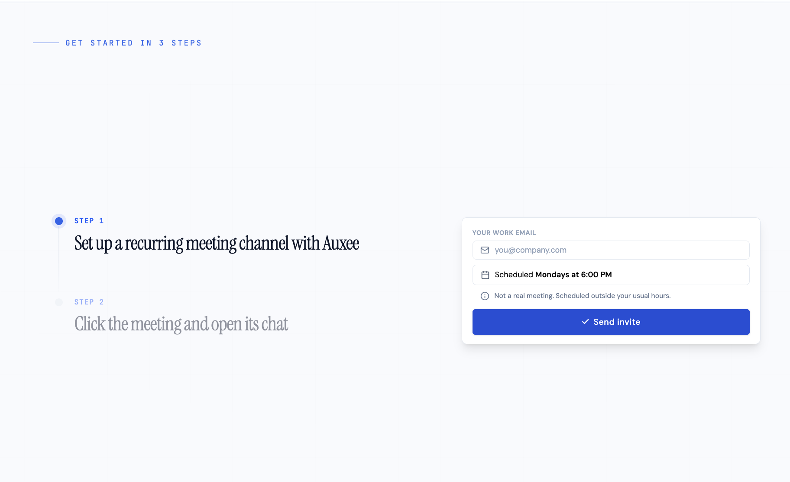

Enterprise software takes months to deploy. We used a calendar invite instead.
Designing the onboarding flow that gets packaging and regulatory professionals an AI analyst in MS Teams in under 3 minutes — no IT request, no approval process, no waiting.
Context
Auxee is an AI analyst for packaging and regulatory professionals — it monitors policy changes, tracks competitor patents, and messages users proactively, all inside Microsoft Teams. I joined at the concept stage alongside the CEO and PM, shaped the product idea, designed the landing page from scratch, and built the frontend myself before handing production-ready code to a backend developer for WordPress.
The Problem
Regulatory professionals are overwhelmed with information from too many sources, and none of it finds them. Auxee would fix that — but getting a bot into MS Teams normally means IT tickets, admin approvals, and weeks of waiting. For a product targeting individual professionals rather than IT buyers, that was a near-fatal barrier.
How do you get an AI analyst into someone's daily workflow without asking their IT department for permission?
The Key Insight
When an external party schedules a Teams meeting with someone, a dedicated chat thread is created automatically — and it persists whether or not the meeting ever happens. That meant we could get Auxee into a user's Teams sidebar the moment they accepted a calendar invite. No IT approval. No installation.
The implementation: users enter their work email, we schedule a recurring 5-minute meeting every Monday at 6:00 PM — outside working hours, never attended. The chat it creates is where Auxee lives. This wasn't just a technical workaround. It was a product decision that had to be communicated without making users feel tricked.
The Landing Page
Lead with the outcome, not the mechanism
The hero promises the result before explaining how it works — a proactive analyst already in your Teams, messaging you about your market. A new user needs to want it before they'll trust the mechanism behind it.

Show features as real moments
Each capability is a specific scenario, not a spec. Not "tracks regulatory changes" — but Auxee flagging that your current barrier coating may not comply with an EU directive three months out. Specificity was the only way to make an AI product feel credible to professionals who deal in exact deadlines and compliance risk. Expert verification — a named PreScouter analyst tagged on each insight — reinforced that trust.

Explain the mechanic before users question it
Before the onboarding steps, a dedicated section reframes the meeting as a channel: "The meeting exists only to host the chat. No one joins it, and you don't need to be available at the scheduled time." That answer needed to appear before the form, not buried in an FAQ.

Make three steps feel like one
The onboarding is a scroll-animated three-step layout — each step paired with the exact UI mockup a user would see at that moment. The email form lives inside Step 1, removing any separate sign-up friction. Inside the form: Not a real meeting. Scheduled outside your usual hours. That line, placed precisely where calendar anxiety peaks, was the most considered copy decision on the page.

Process
Designed in Figma, built with Google AI Studio and Claude Code, handed off as production HTML and CSS for WordPress integration. Working this way — designing and building in a single loop — meant the developer received something to integrate, not something to interpret.
Reflection
The product launched recently and results are still being collected. What we do know is that the onboarding mechanic worked as designed — users can go from email to active Teams chat in under three minutes, with zero IT involvement.